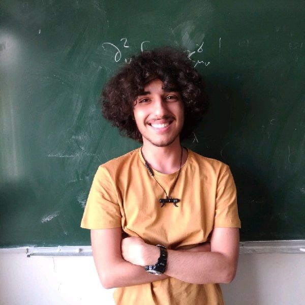

PhD Candidate · Department of Physics · Virginia Tech
I am a 4th-year PhD student in physics at Virginia Tech, advised by Dr. Linbo Shao. I develop theory for devices the group is building, and the results feed back into what gets built next. The problems broadly involve non-Hermitian physics and quantum noise.
Designing high-sensitivity sensors based on non-Hermitian Hamiltonians near Exceptional Points, where the eigenvalue response scales as the nth root of a perturbation rather than linearly, enabling sensitivity beyond the conventional noise floor.
Developing on-chip cavity electro-acoustic devices using high-Q phononic crystal resonators on lithium niobate for quantum signal processing and microwave-to-optical transduction.
Investigating sequential time-gated coupling to achieve magnet-free nonreciprocal frequency transport, enabling isolation and circulation on integrated photonic platforms without permanent magnets.
Earlier work on quench-condensed bismuth films, studying how substrate choice and film thickness affect morphology and magnetotransport, including the role of Rashba spin-orbit coupling and surface carriers.
For a full list, see my arXiv page.
Complex-gain phase tuning at a nonlinear Exceptional Point: SNR optimization and stability of an acoustic LWIR sensor
In preparation · First Author
Magnet-free nonreciprocal frequency conversion using sequential temporal modulation: Theory and simulations
Physical Review A — under review · First Author
On-chip cavity electro-acoustics using lithium niobate phononic crystal resonators
Physical Review Letters — under review
Full CV available as a PDF.